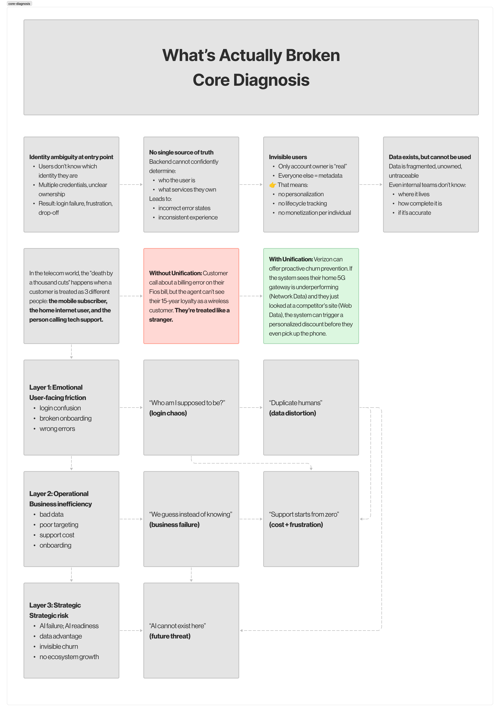
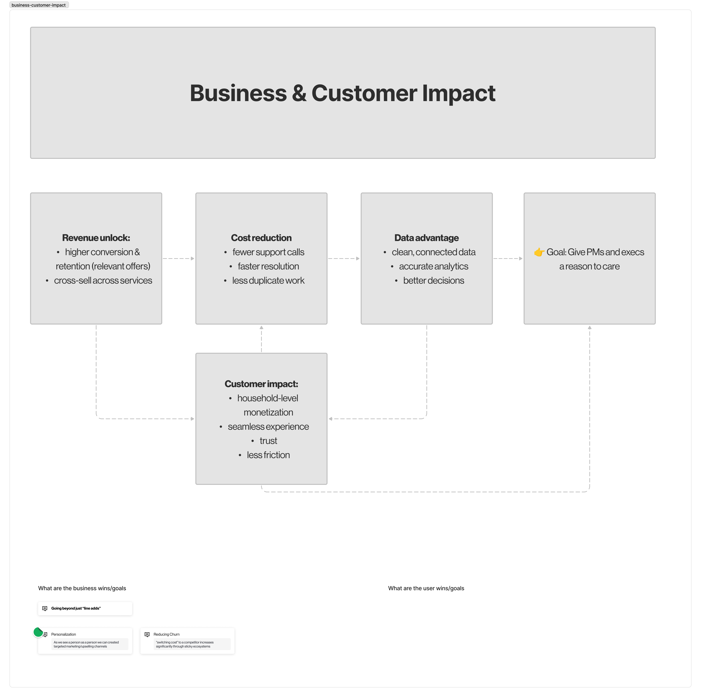

Core Diagnosis
How did we get here?
Verizon's identity ecosystem grew through acquisition and parallel product development, not design. Dozens of product lines, separate account models, and inconsistent data definitions left customers navigating a fragmented experience, and teams building on unstable ground.

Core diagnosis — fragmentation across product lines, account models, and data definitions
Strategic Vision
From fragmentation to a
unified identity core.
The work begins with shared language. Defining what identity means across every product surface, and building the architecture that allows individual teams to operate independently while contributing to a coherent whole. Less integration tax. More compound value over time.

Current state to strategic vision — the architecture transition model
Business & Customer Impact
Infrastructure that earns its keep.
When identity architecture works, it disappears. Customers move between Verizon products without friction. Teams build faster on a shared foundation. And the business gains the intelligence layer needed to deliver genuinely personalized experiences at scale, across every product and surface.

Business and customer impact — how coherent identity creates compounding value across the ecosystem